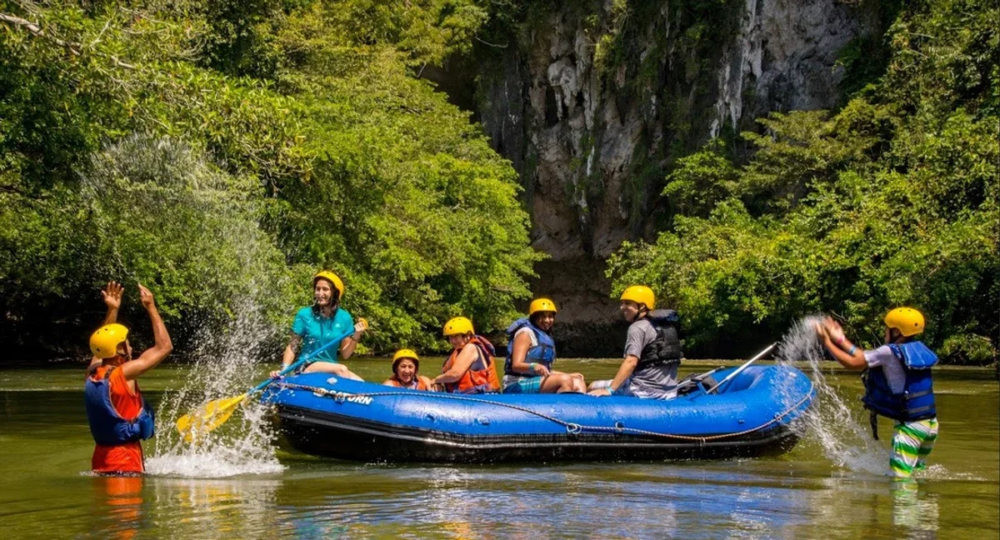
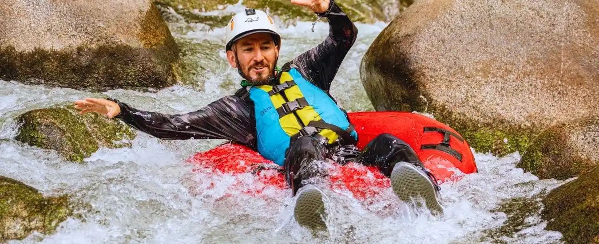
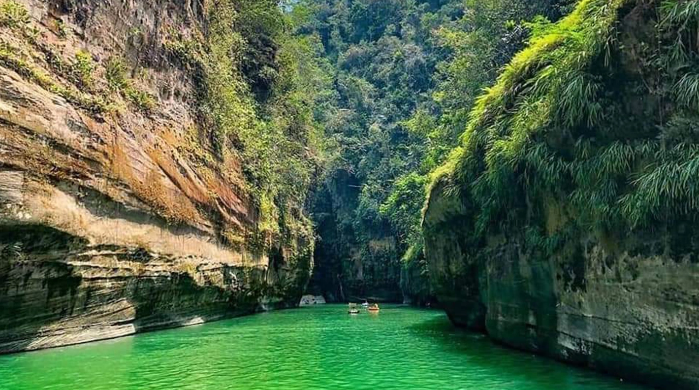

At White Water Rafting, we ride the waves of adventure with courage, laughter, and a splash of wild spirit. Our purpose is to connect people to nature, one rapid at a time. Whether you’re a first-time paddler or a seasoned river warrior, our mission is simple: stay safe, have fun, and raft like there’s no tomorrow.


White Water Rafting
History
Rafting as we know it today has its roots in the 1940s, when inflatable military rafts were used to navigate difficult rivers during scientific and military expeditions. However, it was not until the 1960s that rafting became popular as a recreational activity. The adoption of the modern rubber raft, designed specifically for whitewater rafting, was a significant change that made it accessible to a wider audience.
Rafting in Colombia has evolved as a tourist and sporting activity, taking advantage of the natural beauty of the rivers and offering options for different levels of experience.
Adventure Awaits You